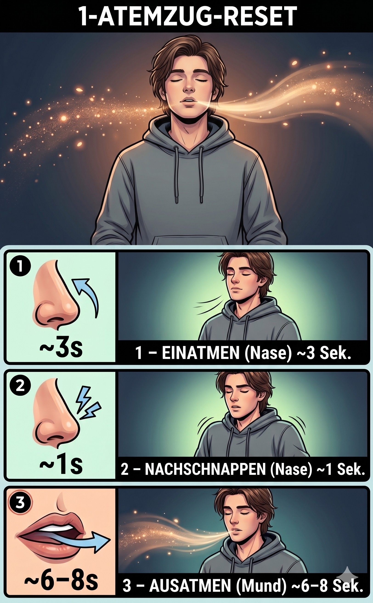

Zwei Techniken. Ein ruhiges Nervensystem.

Das doppelte Einatmen bläht zusammengefallene Lungenbläschen (Alveolen) auf. Dadurch wird schlagartig mehr CO₂ aus dem Blut abtransportiert. Das lange Ausatmen stimuliert den Vagusnerv. Dein Gehirn bekommt das mechanische Signal: „Alles sicher."
Die Stanford-Studie (Balban et al., 2023) zeigte: 5 Min. täglich Physiological Sighs verbesserten Stimmung und Herzratenvariabilität stärker als Meditation.